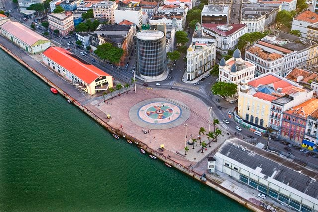
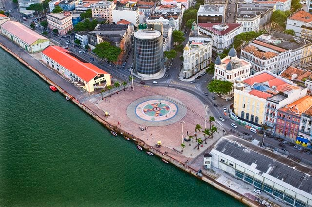

CONHEÇA O MARCO ZERO EM RECIFE ANTIGO E TODA SUA IMPORTÂNCIA HISTÓRICA!

 

O Marco Zero no Recife Antigo é um dos pontos turísticos mais importantes para quem deseja conhecer a capital de Pernambuco. Isso porque é um local de importância histórica que conta o nascimento da cidade e possui forte referência cultural. Além disso, o Marco Zero recebe, anualmente, diversas comemorações e manifestações e também é um lugar muito famoso para quem busca eventos como o Carnaval.
O Marco Zero no Recife Antigo é o lugar de referência onde a cidade nasceu e todas as medidas oficiais de distâncias rodoviárias usam como ponto de partida. Seu nome é, na verdade, Praça Rio Branco e fica ao lado do Porto de Pernambuco. Pode-se dizer que ele se situa no centro histórico da cidade, que é mais conhecido como Recife Antigo por ser a parte onde se iniciou o povoamento da capital pernambucana.
O passeio no Marco Zero no Recife Antigo acontece às margens do porto velho e permite conhecer palacetes históricos, instalações portuárias, bares, restaurantes e espaços culturais. Confira a seguir as melhores dicas do que fazer no local!